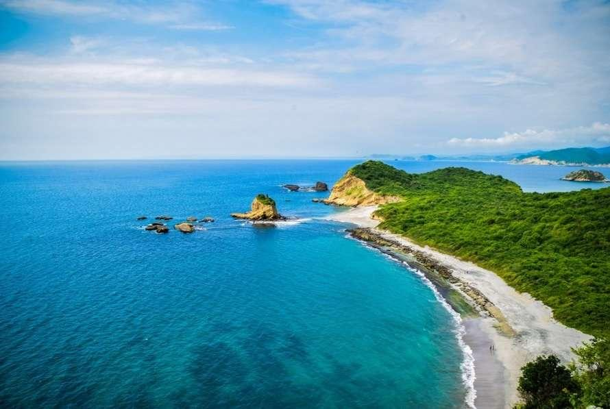
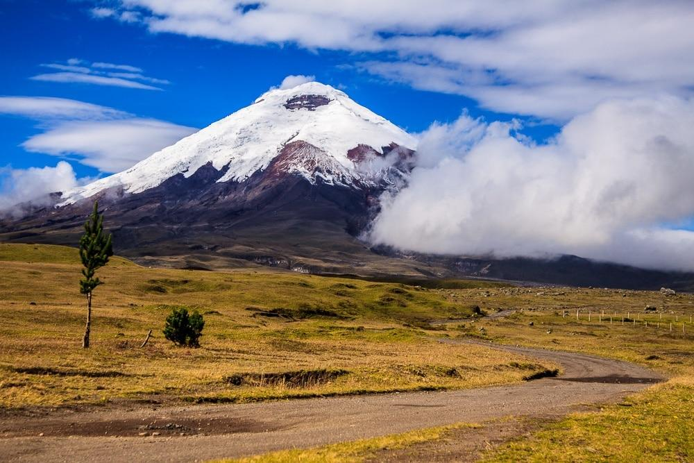
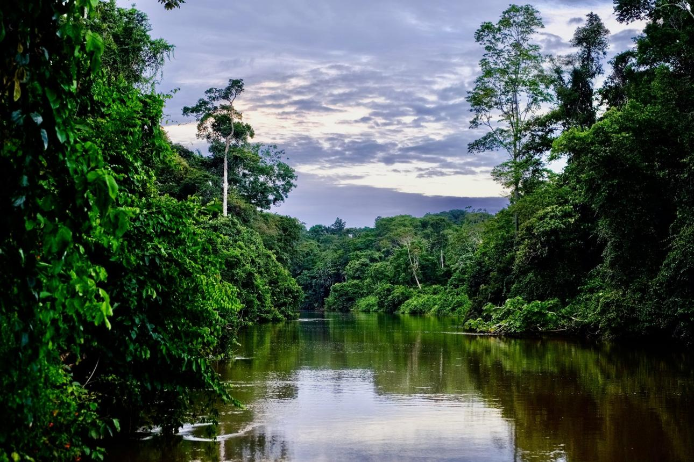
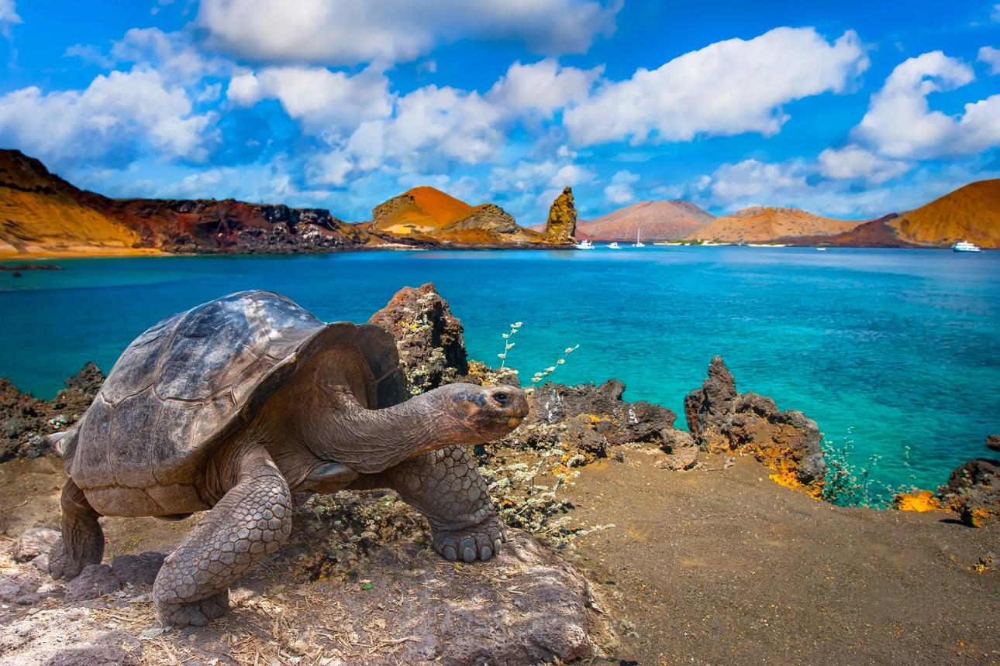

01
CONHEÇA O EQUADOR
Pequeno no mapa.
Pequeno no mapa.
Imenso em diversidade.
Localizado no noroeste da América do Sul, o Equador reúne em um território de aproximadamente 256 mil km² uma extraordinária diversidade de paisagens, povos e culturas.
Banhado pelo Oceano Pacífico e fazendo fronteira com Colômbia e Peru, o país possui quatro grandes regiões naturais: Costa, Andes, Amazônia e Galápagos.
QUATRO REGIÕES
Quatro mundos para descobrir

01
Costa
O encontro entre o Equador e o Pacífico.

02
Andes
Vulcões, montanhas e cidades históricas.

03
Amazônia
Floresta, rios e uma extraordinária biodiversidade.

04
Galápagos
Um dos maiores patrimônios naturais do planeta.
14
nacionalidades indígenas reconhecidas
18
povos indígenas reconhecidos
1978
Quito é reconhecida como Patrimônio Mundial
VOCÊ SABIA?
Mais perto das estrelas?
Devido ao formato da Terra e à sua localização próxima à Linha do Equador, o cume do Chimborazo é o ponto da superfície terrestre mais distante do centro da Terra.